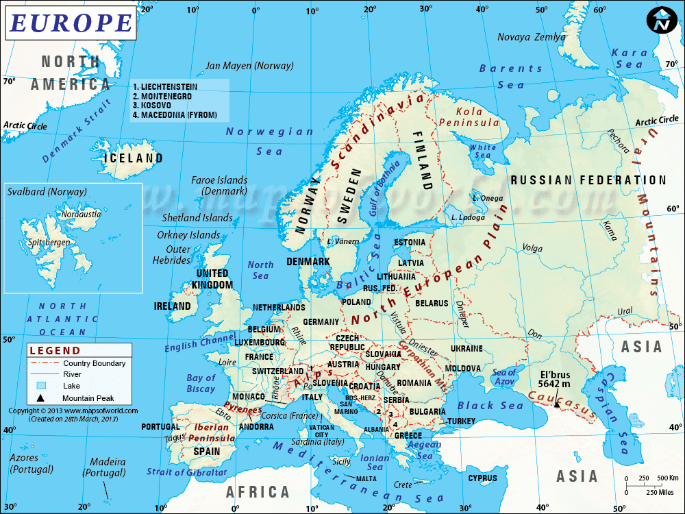

<div id="Europe">
<h2>Europe Facts</h2>
<b>Area</b>: 23 million km<sup>2</sup> (8 876 000 mi<sup>2</sup>)<br>
<br>
<b>Population</b>: 739 million people live in Europe.<br>
<br>
<b>Highest Point</b>: 1. El'brus in Russia, (5 642 m/18 510 ft.); <br>
2. Mont Blanc, 
France-Italy: 4 807m (15 771 ft.).<br>
<br>
<b>Largest Lake</b>: Lake Balaton, Hungary, largest lake of Central Europe, 592 
km<sup>2</sup>.<br>
<br>
<b>Longest Rivers</b>: 1. Volga (3,690 km (2,293 miles), 2. Danube 2850 km (1770 
miles)<br>
<br>
<b>Languages of Europe</b>: English, French, German, 
Greek, Italian, Spanish, Portuguese, Nordic Languages, East European languages.<br>
</div>


